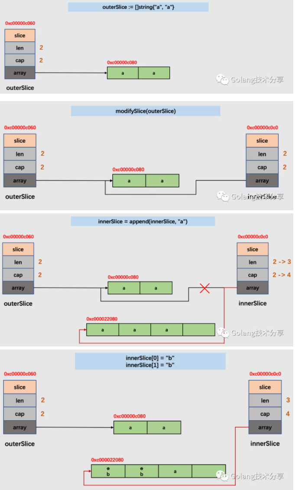

切片传递的隐藏危机
在Go的源码库或者其他开源项目中，会发现有些函数在需要用到切片入参时，它采用是指向切片类型的指针，而非切片类型。这里未免会产生疑问：切片底层不就是指针指向底层数组数据吗，为何不直接传递切片，两者有什么区别？
例如，在源码log包中，Logger对象上绑定了formatHeader方法，它的入参对象buf，其类型是*[]byte，而非[]byte。
1 | 1func (l *Logger) formatHeader(buf *[]byte, t time.Time, file string, line int) {} |
有以下例子
1 | 1func modifySlice(innerSlice []string) { |
我们将modifySlice函数的入参类型改为指向切片的指针
1 | 1func modifySlice(innerSlice *[]string) { |
在上面的例子中，两种函数传参类型得到的结果都一样，似乎没发现有什么区别。通过指针传递它看起来毫无用处，而且无论如何切片都是通过引用传递的，在两种情况下切片内容都得到了修改。
这印证了我们一贯的认知：函数内对切片的修改，将会影响到函数外的切片。但，真的是如此吗？
考证与解释
在《你真的懂string与[]byte的转换了吗》一文中，我们讲过切片的底层结构如下所示。
1 | 1type slice struct { |
array是底层数组的指针，len表示长度，cap表示容量。
我们对上文中的例子，做以下细微的改动。
1 | 1func modifySlice(innerSlice []string) { |
神奇的事情发生了，函数内对切片的修改竟然没能对外部切片造成影响？
为了清晰地明白发生了什么，将打印添加更多细节。
1 | 1func modifySlice(innerSlice []string) { |
在Go函数中，函数的参数传递均是值传递。那么，将切片通过参数传递给函数，其实质是复制了slice结构体对象，两个slice结构体的字段值均相等。正常情况下，由于函数内slice结构体的array和函数外slice结构体的array指向的是同一底层数组，所以当对底层数组中的数据做修改时，两者均会受到影响。
但是存在这样的问题：如果指向底层数组的指针被覆盖或者修改（copy、重分配、append触发扩容），此时函数内部对数据的修改将不再影响到外部的切片，代表长度的len和容量cap也均不会被修改。
为了让读者更清晰的认识到这一点，将上述过程可视化如下。

可以看到，当切片的长度和容量相等时，发生append，就会触发切片的扩容。扩容时，会新建一个底层数组，将原有数组中的数据拷贝至新数组，追加的数据也会被置于新数组中。切片的array指针指向新底层数组。所以，函数内切片与函数外切片的关联已经彻底斩断，它的改变对函数外切片已经没有任何影响了。
注意，切片扩容并不总是等倍扩容。为了避免读者产生误解，这里对切片扩容原则简单说明一下（源码位于src/runtime/slice.go 中的 growslice 函数）：
切片扩容时，当需要的容量超过原切片容量的两倍时，会直接使用需要的容量作为新容量。否则，当原切片长度小于1024时，新切片的容量会直接翻倍。而当原切片的容量大于等于1024时，会反复地增加25%，直到新容量超过所需要的容量。
到此，我们终于知道为什么有些函数在用到切片入参时，它需要采用指向切片类型的指针，而非切片类型。
1 | 1func modifySlice(innerSlice *[]string) { |
请记住，如果你只想修改切片中元素的值，而不会更改切片的容量与指向，则可以按值传递切片，否则你应该考虑按指针传递。
例题巩固
为了判断读者是否已经真正理解上述问题，我将上面的例子做了两个变体，读者朋友们可以自测。
测试一
1 | 1func modifySlice(innerSlice []string) { |
测试二
1 | 1func modifySlice(innerSlice []string) { |
测试一答案
1 | 1[b b a] |
测试二答案
1 | 1[b b a] |
你做对了吗？